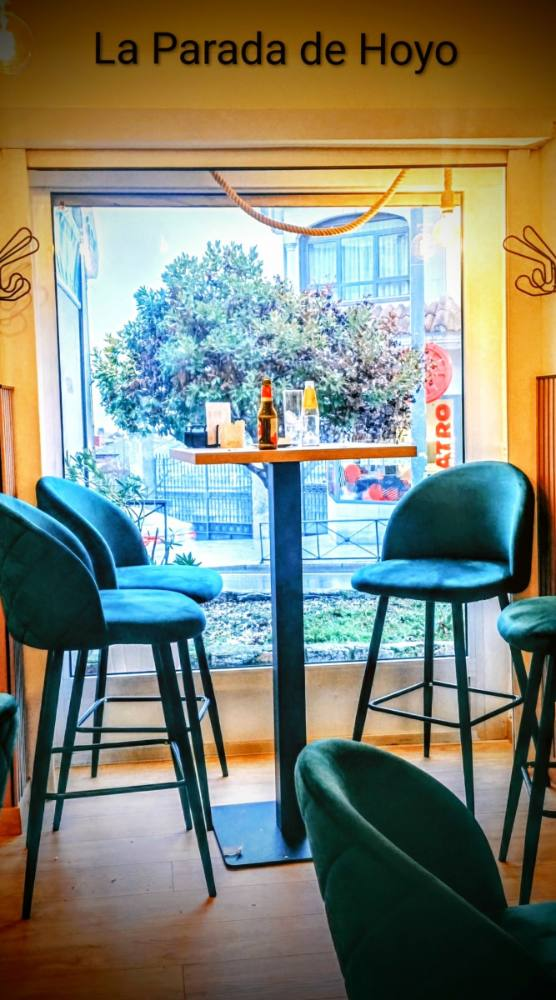
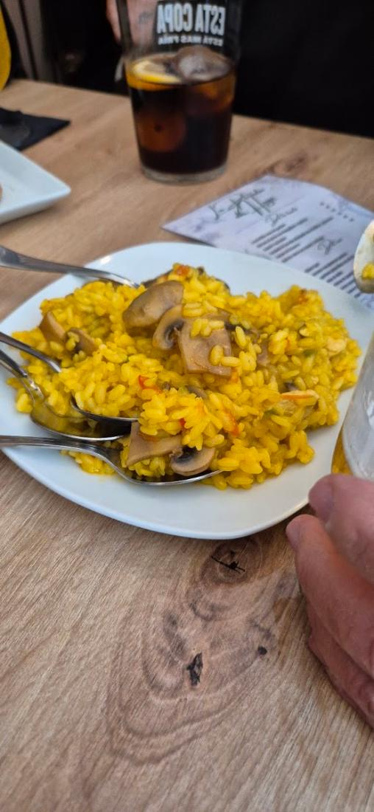
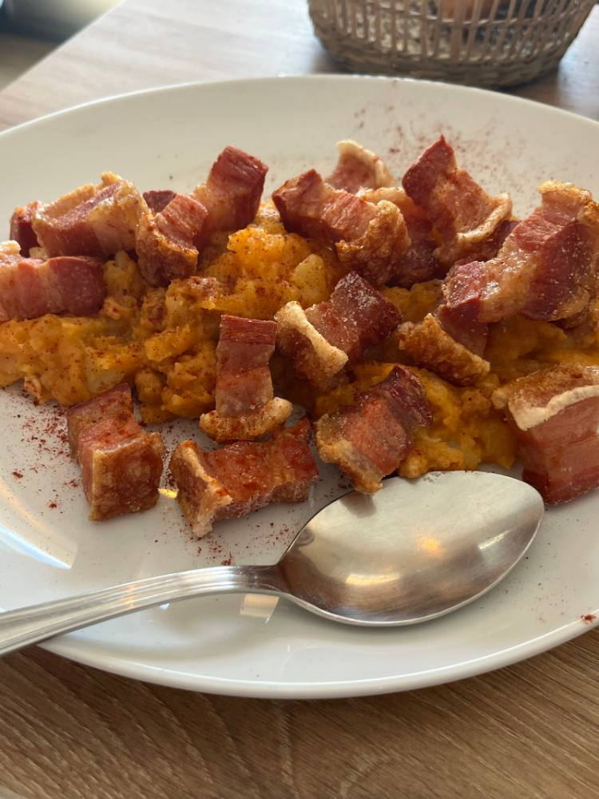
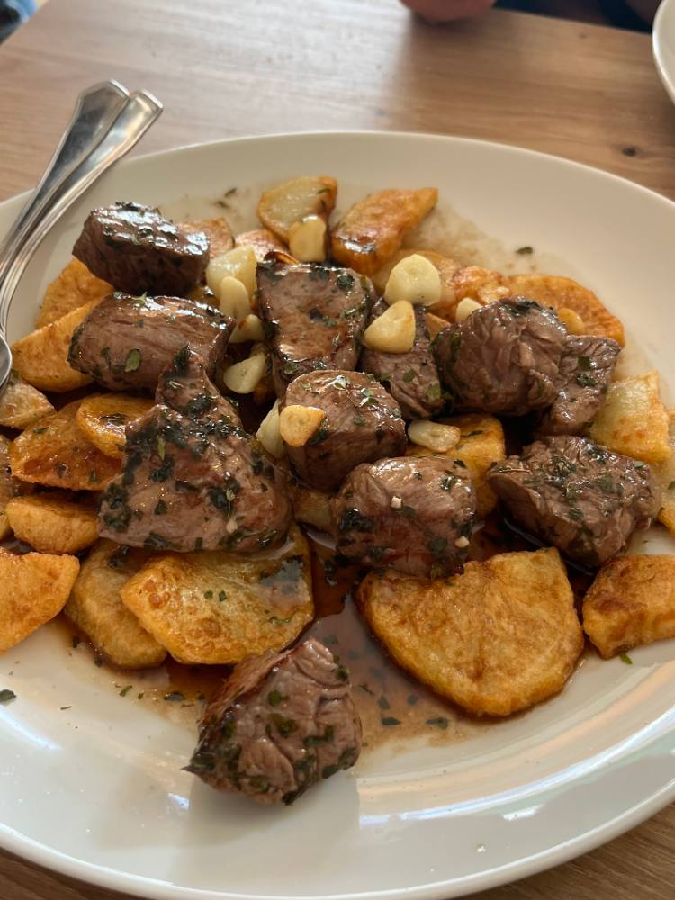
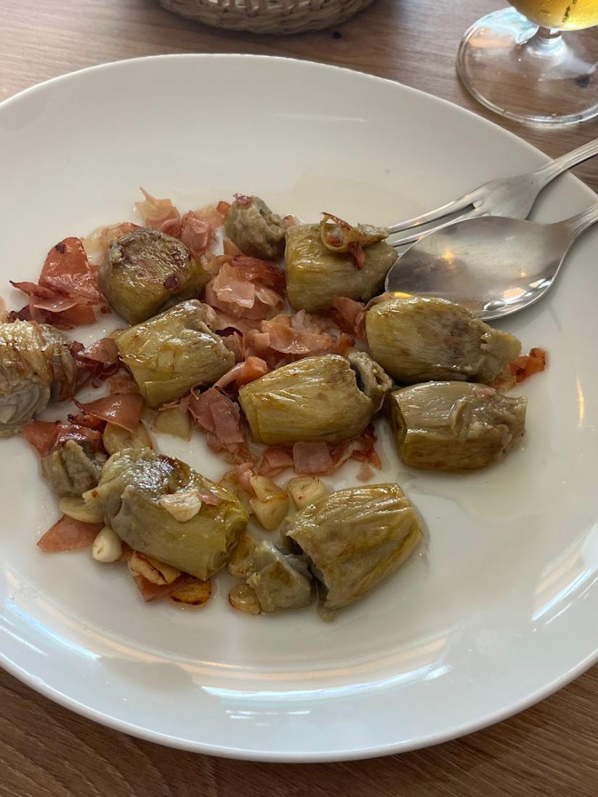
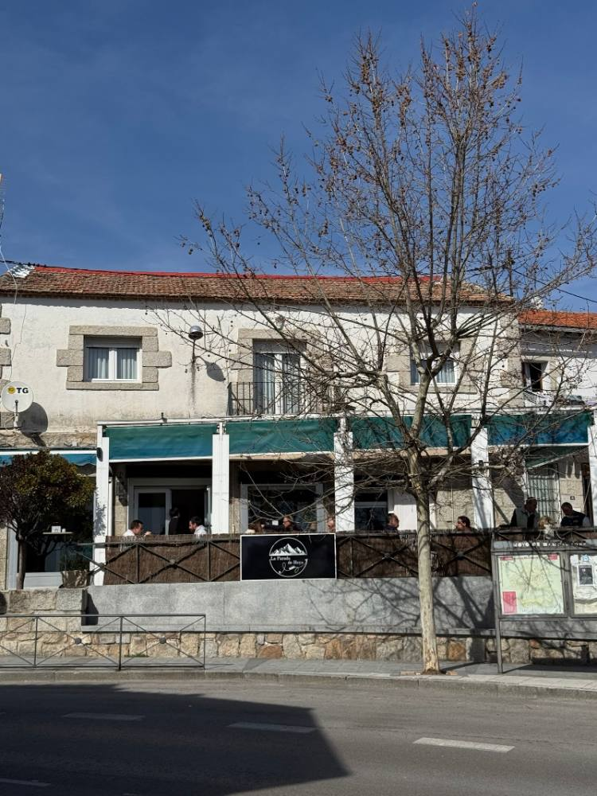

La Parada de Hoyo
Cocina de toda la vida, en el centro del pueblo.
Torreznos de Soria con patatas revolconas, lagarto ibérico, croquetas caseras y un aperitivo con cada caña. Local recién reformado y terraza al sol.

su aperitivo
Aquí no se sirve una cerveza sola. Con cada consumición llega algo de la cocina: un arrocito, un canapé, unas revolconas… lo que haya salido ese día. Perfecto para alargar la mañana en la terraza.


Para picar, compartir y repetir
Producto de la huerta y de la tierra, cocinado como en casa.
- Cachopo asturiano
- Tomate con bonito
- Chipirones con pimientos de Padrón
- Tortilla de patata







Un bar de familia en el centro de Hoyo
La Parada de Hoyo es cosa de familia. Fernando y María están al frente, y Ana, la madre de María, lleva la sala como si recibiera en su propia casa.
Hemos reformado el local de arriba abajo para que se esté a gusto: terciopelo verde, madera y mucha luz. Lo que no ha cambiado es la cocina, la de toda la vida, ni las ganas de que vuelvas.
Parada obligatoria
Tiene una carta con muchas opciones, y está todo riquísimo.
Tenéis que pedir los torreznos de Soria con patatas revolconas.
Ideal para tomar el aperitivo, muy agradable y nos atendieron fenomenal.
Cuándo abrimos
- LunesCerrado
- Martes19:00 – 23:30
- Miércoles12:00 – 17:00 · 19:00 – 23:30
- Jueves12:00 – 17:00 · 19:00 – 23:30
- Viernes12:00 – 17:00 · 19:00 – 23:30
- Sábado12:00 – 17:00 · 19:00 – 23:30
- Domingo12:00 – 20:00
Estamos en la calle Hurtada
- Dirección
- C/ Hurtada, 9
28240 Hoyo de Manzanares, Madrid - Teléfono y WhatsApp
- 645 32 26 49